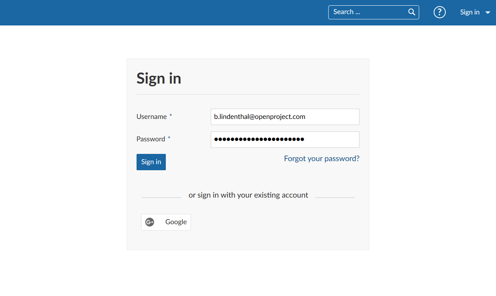
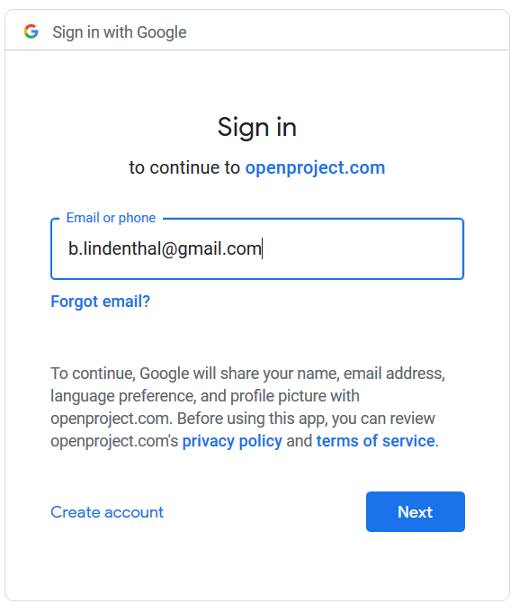
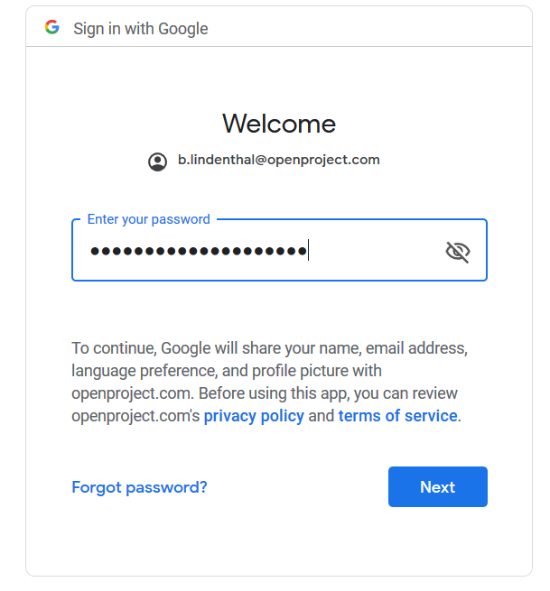
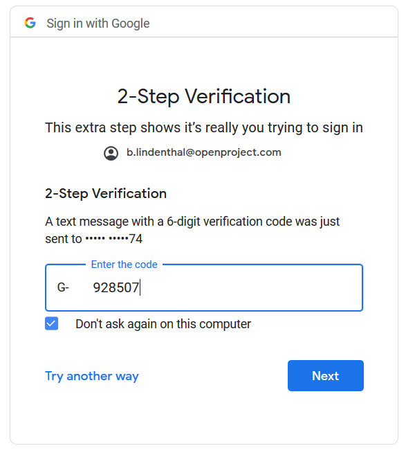
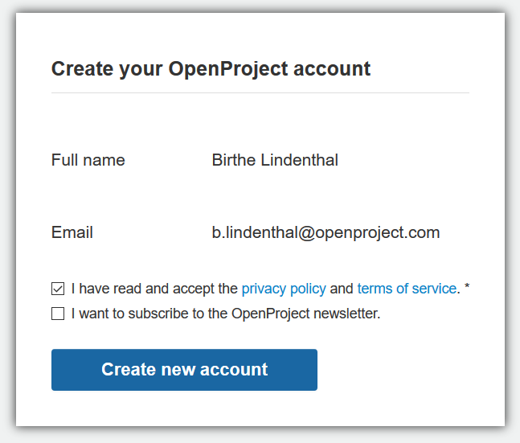
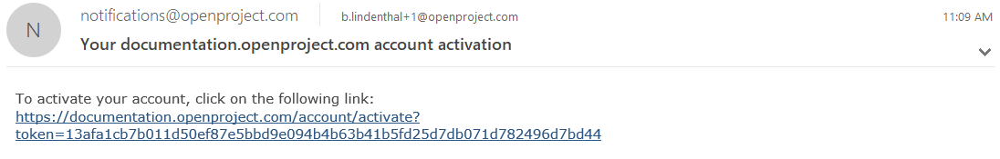
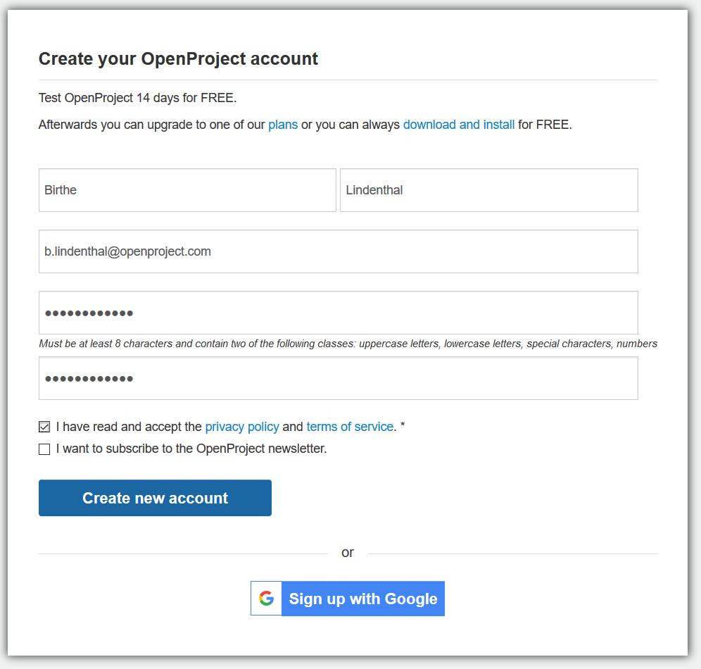
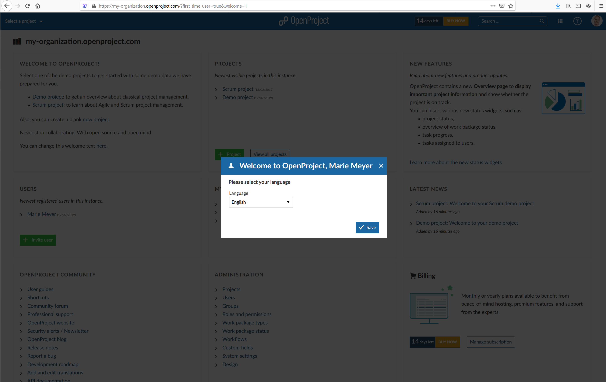
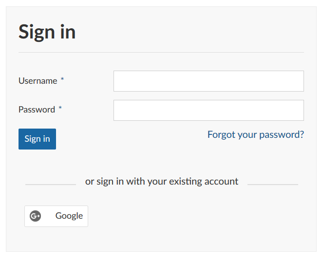
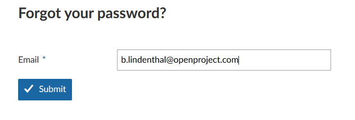

Here you will get an overview how to sign in and register to an existing OpenProject installation.
| Topic | Content |
|---|---|
| Sign in with an existing account | Sign in with an existing account to an OpenProject installation. |
| Sign in with Google | Find out how to sign in with a Google account. |
| Sign in from the OpenProject website | Sign in to an existing OpenProject Cloud Edition from the website. |
| Create a new account | Create a new account for OpenProject. |
| Choose your language | How to select your language in OpenProject? |
| Reset your password | If you forgot your password find out how to reset it. |
To sign in to an OpenProject installation with an existing account, please enter the URL of your OpenProject in a modern browser, e.g. documentation.openproject.com.
Type in your user name and password in the respective fields and click the blue Sign in button. You will then be signed in to your OpenProject environment.

Enterprise Edition and Cloud Edition customers can sign in with OpenID Connect, using their Google account. To sign in just click the Google button below the sign in form.
Please enter your email and click the blue Next button.

Enter you password and click the blue Next button.

If you have activated Two-factor authentication, please enter your second factor and click the blue Next button.

Then, you are asked to create your OpenProject Account.

If you are using the OpenProject Cloud Edition, you can sign in to your installation directly from the OpenProject website.
Please follow the instructions in our Cloud Edition guide.
If you have been invited via email to an OpenProject installation, or if you have set up your own OpenProject (trial) installation, you are asked to create a new account in the system.
Please click the link in the invitation email:

Enter the following information:
Please confirm the Privacy policy and terms of service and click the blue Create new account button.

Make sure to remember your password in order to sign-in again at a later point.
After the creation of your account you are logged into the system. You will then be asked to set your language in the system. Please choose your preferred language from the drop-down list.

If you have already logged in before, you can set your language in your user profile.
If you forgot your password, you can reset your password by clicking the blue Forgot your password link directly below the Sign in field.

You are then asked to enter you email address with which you have registered to OpenProject.

You will then receive an email with a link to reset your password.
Yes, it is possible to use OpenProject in multiple languages. We support English, German, French and a number of additional languages. Each user can select their own preferred language by signing into OpenProject, clicking on the user avatar on the upper right side and selecting “My account” from the dropdown menu. You can then select “Settings” from the side menu on the left side and change the language.